主路线
从南院沿中轴进入病房前横廊，接应东西门槛的伤兵，再护送穿过两道院墙中央口抵达南出口。
王都内廷的伤兵后撤、三段登天桥、地下修复设施、日宫两翼门阵、旧书库、两军合流前庭与最终神座分别组织构图。街区、院落、道路和水域先形成真实关系，再安排部署与任务点；保留剧情、数值规则和现有动画。
前后地图均来自游戏原生渲染器；各图按任务重组空间，左右按各自完整边界展示，并非同像素比例的面积对比。点击原图可放大检查。
北殿与东西病房围成内廷，南照护院位于横向院墙后；宫前中轴、病房南门横廊与后撤门形成可理解的救护线路。
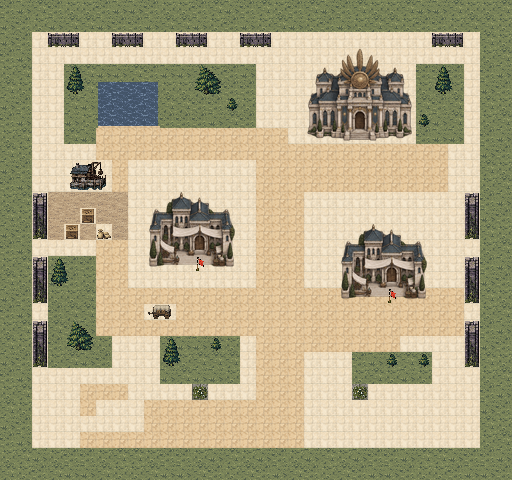

从南院沿中轴进入病房前横廊，接应东西门槛的伤兵，再护送穿过两道院墙中央口抵达南出口。
东西病房侧廊可换线，东外侧通道连接固定援军入口；宫前横廊可接近守卫长侧面。
开病房只解除伤兵锁定，不拆除建筑碰撞；先压住门外守军再放行，更容易保护两组。两病房都须确认，至少一组撤离并击败首领。
蓝：候选部署；红：守军；金：剧情友军；绿：交互；紫：出口。路线仅为本页解释，不加入实机画面。实际通行以游戏地形为准。
结算时正式队员 6/6 存活；无人濒死。
1,334次按键，含出入场与战后操作。原始记录
结算时正式队员 6/6 存活；无人濒死。
1,201次按键，含出入场与战后操作。原始记录
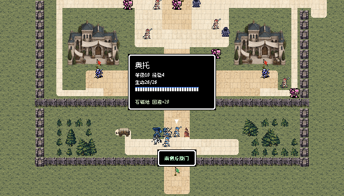
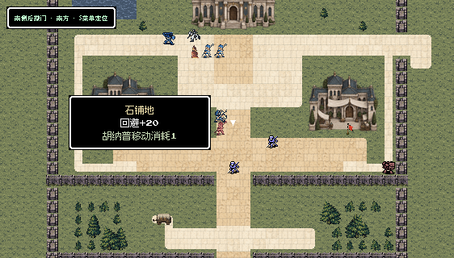
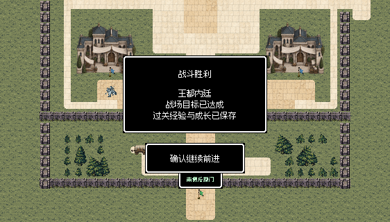
三段真实跨水石桥连接东西岸与两处中间承台，桥面各有三格净宽，完整石柱和通行带外护栏说明支撑与边界。
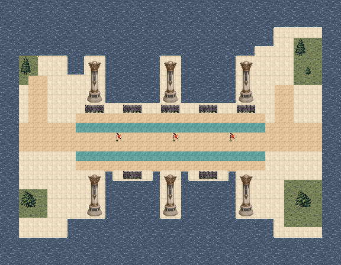
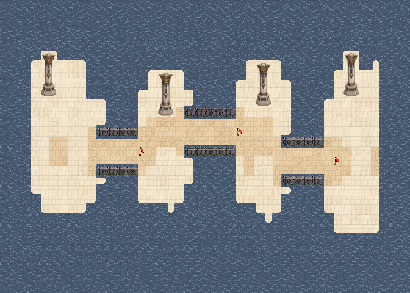
西岸出发沿错位桥段逐个抵达三个桥锁，依西到东解除后继续攻向东岸桥卫统领。
两处承台南侧设整队支台，西岸和东岸各有回廊；飞行者可以越水侧援，但不能代替桥锁确认。
桥口便于集中防守，也会限制大队展开；可在承台换队和等待后卫，避免所有人挤进同一狭口。第4回合援军由西岸落脚平台进入。
蓝：候选部署；红：守军；金：剧情友军；绿：交互；紫：出口。路线仅为本页解释，不加入实机画面。实际通行以游戏地形为准。
结算时正式队员 6/6 存活；无人濒死。
1,015次按键，含出入场与战后操作。原始记录
结算时正式队员 6/6 存活；无人濒死。
1,007次按键，含出入场与战后操作。原始记录
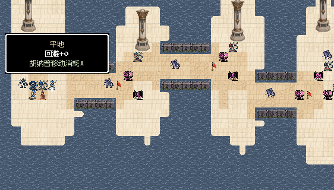
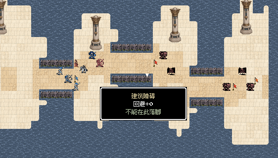
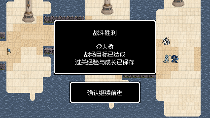
地下主渠分开两处错位修复院，连续石墙与双格南门保护地方工班；完整调节器、工作面、北值守阶与检修物资明确设施用途。

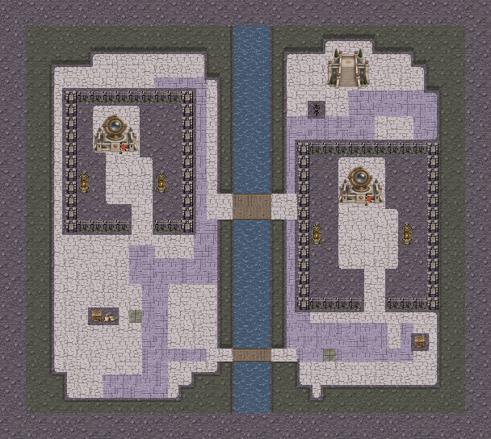
从西南接应处进入第一修复院，交接后保护工班，再经中段两格检修桥和东院南廊前往第二修复区。
南端一格维护桥距离更长，可绕开中央守军；东西渠边上廊连接北值守区，桥头石台留出转向空间。
每处交接分别计算等待回合，确认当回合还不能离开防护责任；两工班都必须存活。南桥绕行与主桥集中推进各有代价，第3回合东南援军保持。
蓝：候选部署；红：守军；金：剧情友军；绿：交互；紫：出口。路线仅为本页解释，不加入实机画面。实际通行以游戏地形为准。
结算时正式队员 7/7 存活；无人濒死。
2,611次按键，含出入场与战后操作。原始记录
结算时正式队员 7/7 存活；无人濒死。
2,796次按键，含出入场与战后操作。原始记录
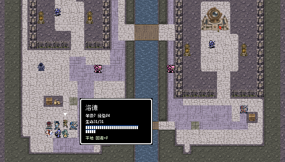
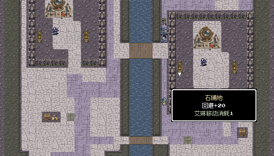
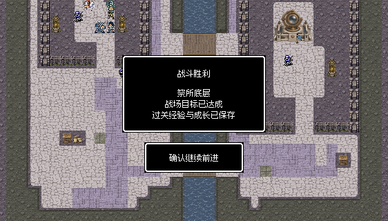
完整院墙、两组错位门阵和中央水庭构成下层宫院，北主殿、四根完整石柱与南横廊建立前后层次。
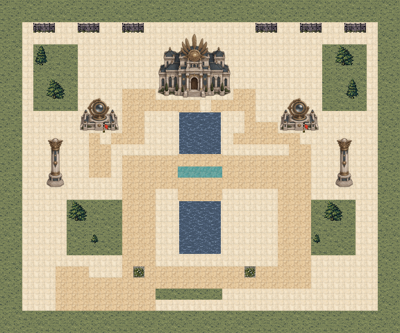

从西南门先接近较近的西门阵，沿南横廊进入更深的东翼，确认两处后沿中央石桥推进神官前庭。
两翼内侧窄巡廊连到主殿侧面；西翼门前较宽，东翼需穿两格隔墙口，接敌距离与换线条件不同。
门阵必须在各装置南面分别确认，走过不会自动完成；两处确认都不能由击败神官替代。中央石桥直接，但两侧水庭限制横向展开。
蓝：候选部署；红：守军；金：剧情友军；绿：交互；紫：出口。路线仅为本页解释，不加入实机画面。实际通行以游戏地形为准。
结算时正式队员 7/7 存活；无人濒死。
1,581次按键，含出入场与战后操作。原始记录
结算时正式队员 7/7 存活；无人濒死。
1,530次按键，含出入场与战后操作。原始记录
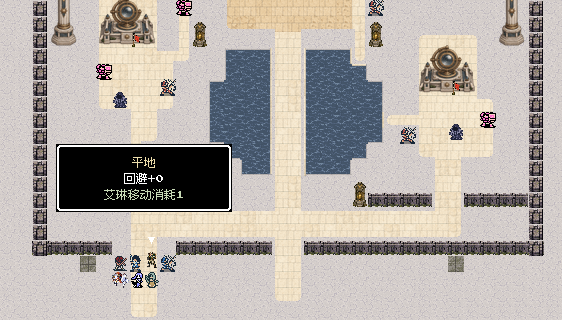
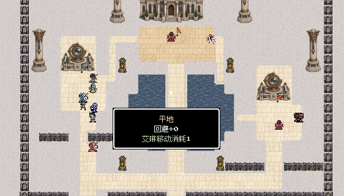
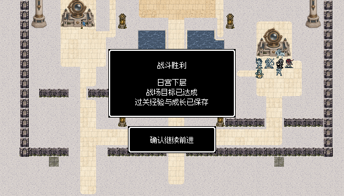
北侧档案楼朝南，两侧木地板阅览室布置完整书架与阅览桌，石廊连接南门；北封闭旁室保留不能进入全部房间的叙事。


从南门沿中轴到北档案楼南面取回原件，击败守卫后沿同一条可辨认的中轴回南门交接。
西阅览室有南门和东门，东阅览室有南门和西门，书架前后的通道允许从两翼换线接近守军。
完整书架占三乘三格，不是可穿行背景；封闭旁室没有任务目标或额外宝物。支线可在合军前完成，错过仍可完成主线，不要求清空所有敌人或角落。
蓝：候选部署；红：守军；金：剧情友军；绿：交互；紫：出口。路线仅为本页解释，不加入实机画面。实际通行以游戏地形为准。
结算时正式队员 7/7 存活；无人濒死。
632次按键，含出入场与战后操作。原始记录
结算时正式队员 7/7 存活；无人濒死。
609次按键，含出入场与战后操作。原始记录
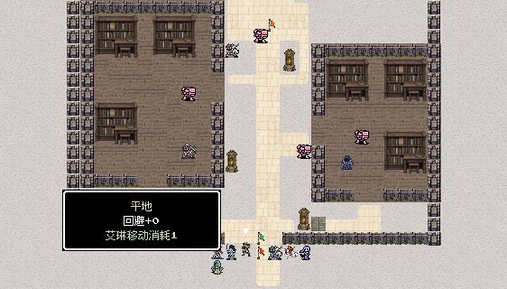
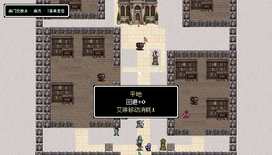
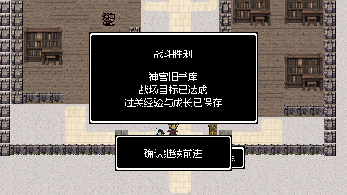
两军分别从西南、东南柱列入口进入左右庭，两座内池分开中央阶口与两翼阵台；北殿构成共同推进方向。
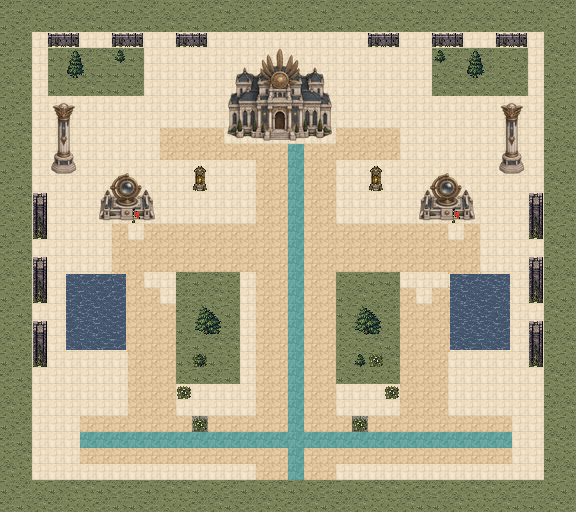

双方先沿本侧庭路确认门阵，再在中层横廊会合，经过中央阶梯或上层侧廊接近统领。
后方联络廊允许跨翼支援，上层侧廊可绕过中央阶口；两条横向联络线让一侧受压时可以重新分配队员。
两翼各有守军，分头推进较快但需要照顾弱领队；确认后不用永久站点。双主角必须存活，双方原队归属与各最多十人部署保持。
蓝：候选部署；红：守军；金：剧情友军；绿：交互；紫：出口。路线仅为本页解释，不加入实机画面。实际通行以游戏地形为准。
结算时正式队员 14/14 存活；无人濒死。
2,267次按键，含出入场与战后操作。原始记录
结算时正式队员 14/14 存活；无人濒死。
2,706次按键，含出入场与战后操作。原始记录
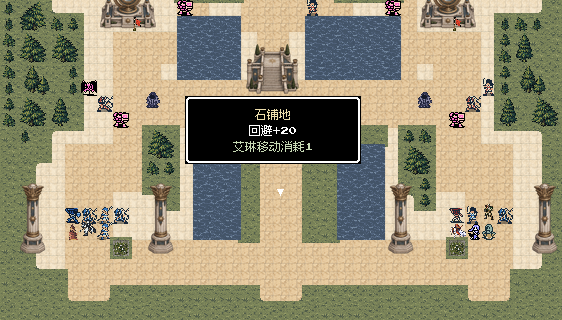
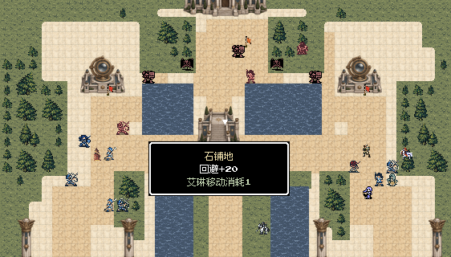
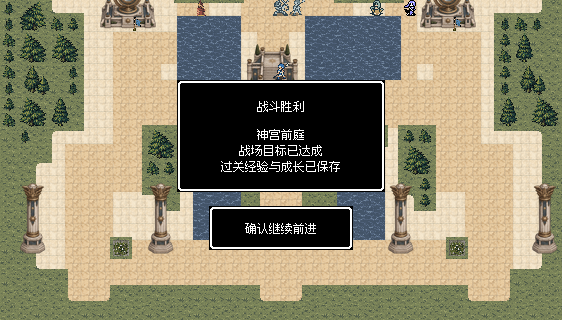
神座位于北端上层中轴，中央仪道与东西阶廊汇入攻击平台；池水、柱脚和后方横廊组织前进与撤退空间。
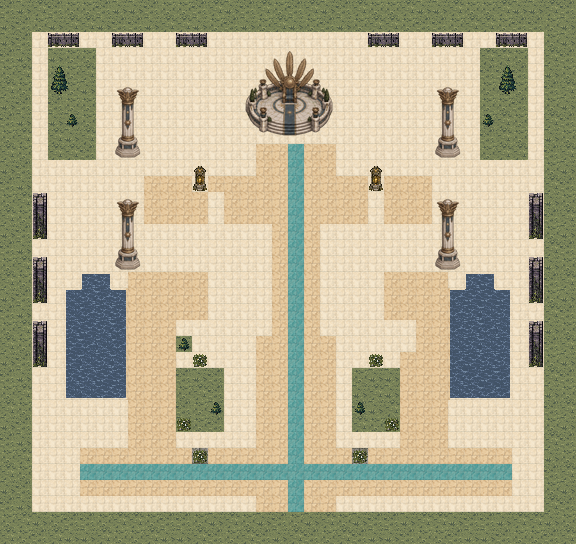
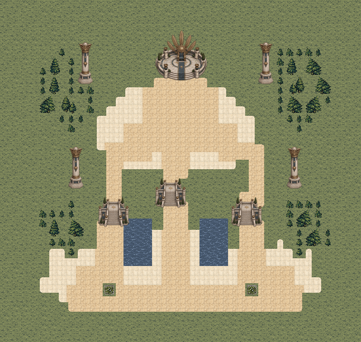
两军从南侧入口展开，沿中央阶梯接近神座，或先处理两翼飞行敌与术士后从侧阶进入上层。
东西上层回廊可以换位，后方池旁横廊连通两军入口，为治疗者、弱领队和后撤单位留出通路。
阶梯只有踏步可走，栏柱真实阻挡；首领周围留出近战、法术和半血援军空间。普通武器与法术始终有效，半血仅一次强化与召唤，不回血。
蓝：候选部署；红：守军；金：剧情友军；绿：交互；紫：出口。路线仅为本页解释，不加入实机画面。实际通行以游戏地形为准。
结算时正式队员 14/14 存活；无人濒死。
2,521次按键，含出入场与战后操作。原始记录
结算时正式队员 13/14 存活；濒死：兰斯。
3,081次按键，含出入场与战后操作。原始记录
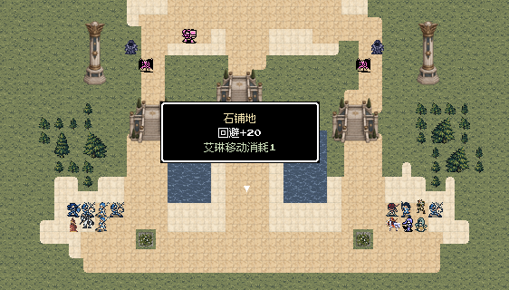
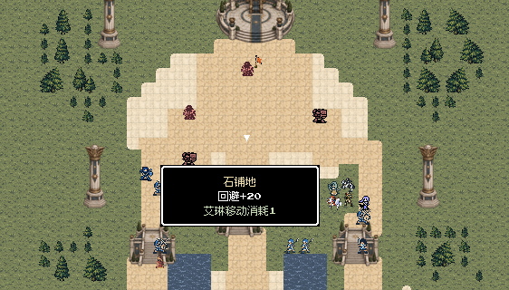
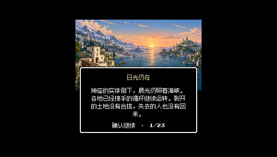
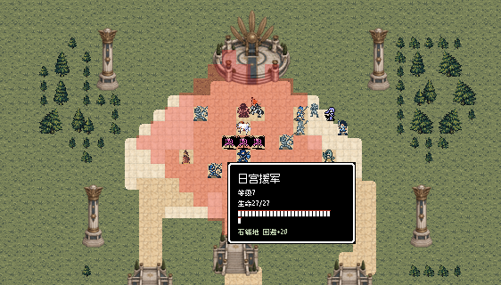
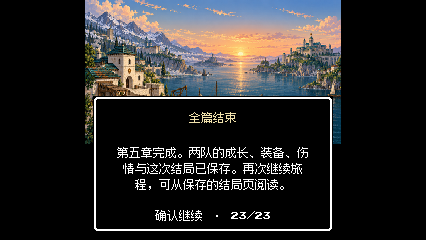
七图完成两轮逐关实际输入复测，检查战后据点、救援、工班修复、门阵控制和主线接续。另从第四章真实完成记录连续推进第五章七图，使用正常整备、剩余救治资源和两军名单菜单完成合流，最终11名正式队员全部存活并读完后日谈。旧书库的自动驾驶误先走交接点，保留第91回合原状态改正取档顺序后继续，没有重开、重试、修改属性或强制胜利。
复查后收紧终局前庭的空旷铺地，补足桥头与阶台的材质衔接，去除宫殿透明边缘下的方形垫地，并用低饱和书架和阅览桌区分旧书库。最终地图全部完成两轮逐关通关。自动驾驶的水渠队形与取档顺序已修正；实机暴露的预览空目标报错已加入防错检查。
2601项独立规则、连通与保存检查通过；23张实机视口文字安全区检查无错误。前四章33张地图（含已确认M41）保持原样，战斗规则与人物动画沿用；附带修复目标失效时的战斗预览报错。
两轮逐关检查使用真实开发记录的隔离副本；测试程序通过普通按键驱动实际游戏，完成移动、战斗、交互和结算，没有修改属性、随机结果或强制胜利。表内回合数受路线、命中和伤情影响，不代表固定难度。
初版七图试玩与所有失败记录均保留。最终F51首轮曾因测试队形贴近治疗者而在水渠两岸等待，调整普通行军策略后完成两轮；连续S51曾先走交接点而未取档，保留同一T91状态修正顺序，T97通关并完成终局，未重开战场。
未重新安装手机包；HTML资源与脚本检查不等同浏览器布局验收。